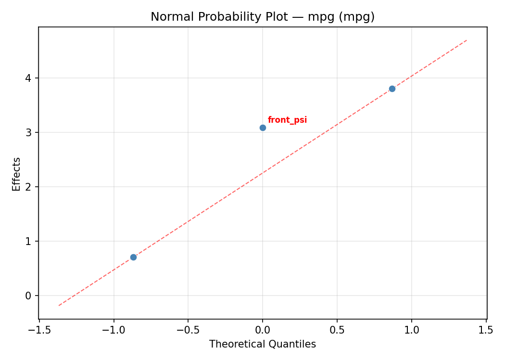
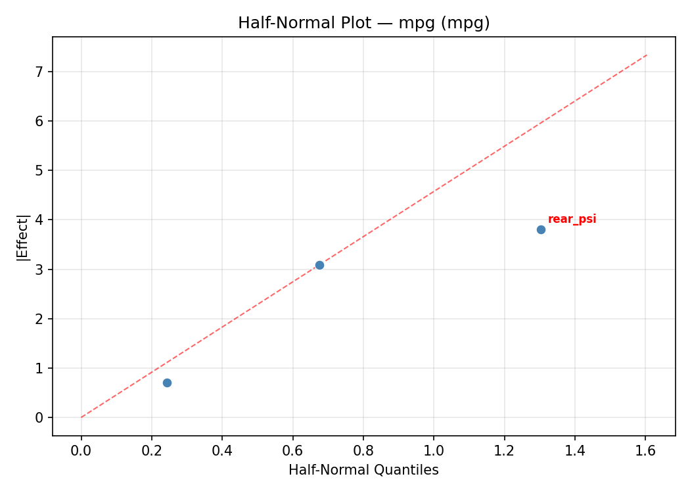
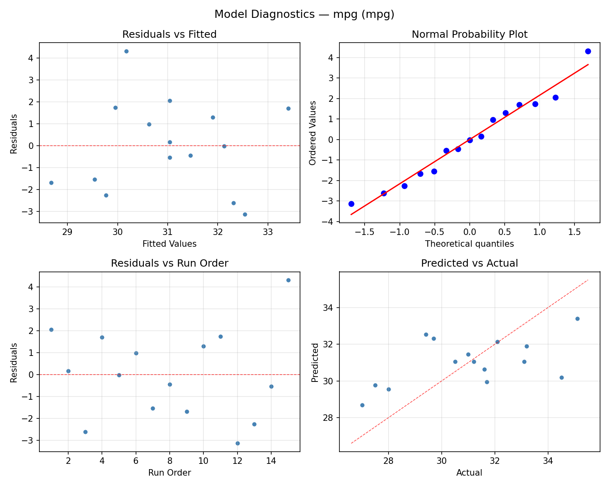
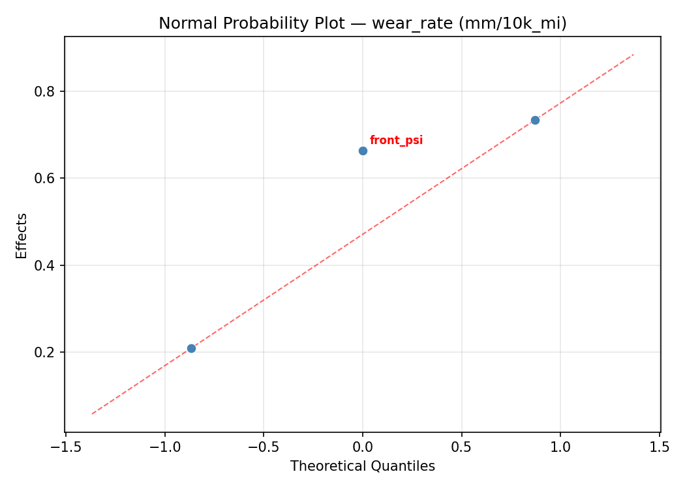
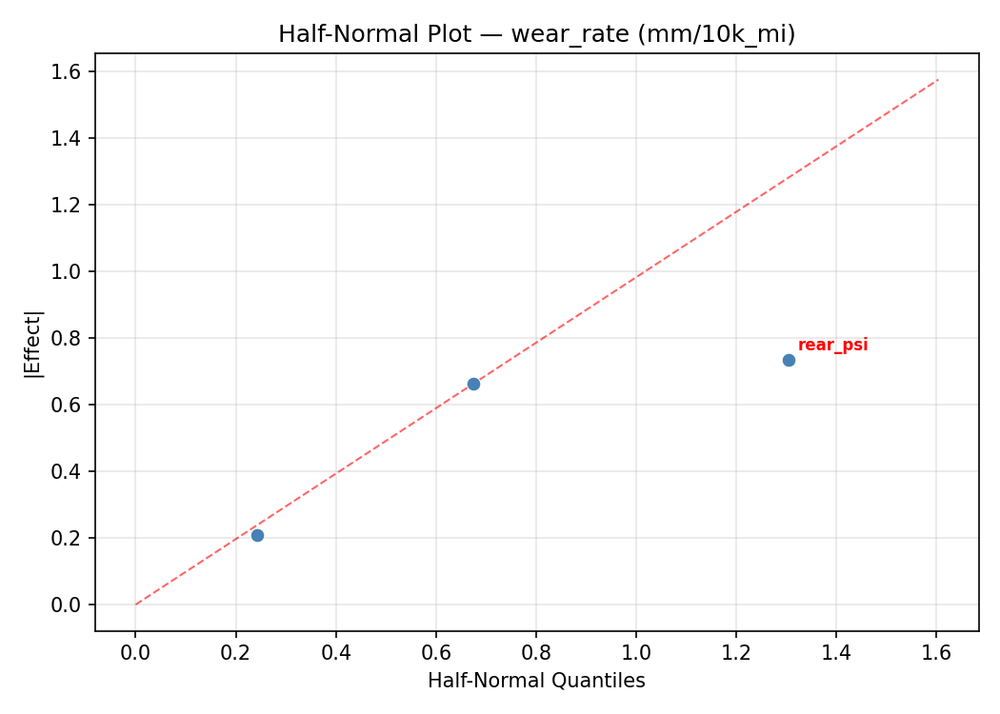
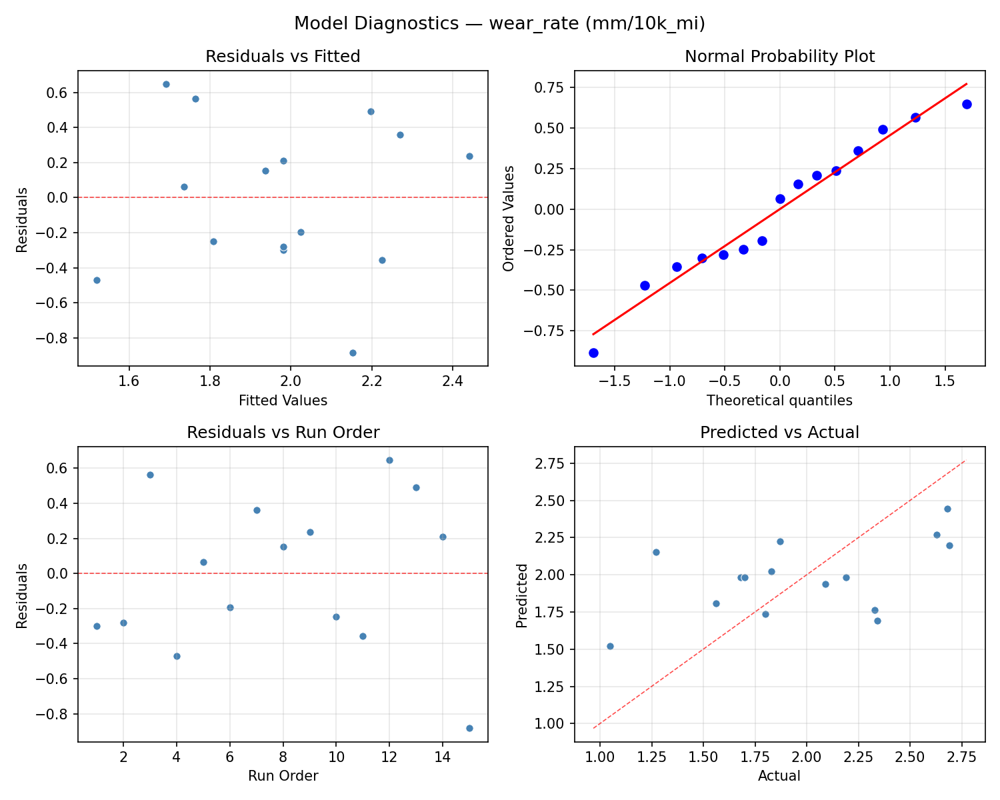

Summary
This experiment investigates tire pressure & fuel economy. Box-Behnken design to maximize fuel economy and minimize tire wear by tuning front pressure, rear pressure, and load weight.
The design varies 3 factors: front psi (psi), ranging from 28 to 38, rear psi (psi), ranging from 28 to 38, and load kg (kg), ranging from 100 to 400. The goal is to optimize 2 responses: mpg (mpg) (maximize) and wear rate (mm/10k_mi) (minimize). Fixed conditions held constant across all runs include vehicle = sedan, tire model = all_season.
A Box-Behnken design was chosen because it efficiently fits quadratic models with 3 continuous factors while avoiding extreme corner combinations — requiring only 15 runs instead of the 8 needed for a full factorial at two levels.
Quadratic response surface models were fitted to capture potential curvature and factor interactions. The RSM contour plots below visualize how pairs of factors jointly affect each response.
Key Findings
For mpg, the most influential factors were load kg (44.0%), rear psi (40.2%), front psi (15.8%). The best observed value was 35.1 (at front psi = 28, rear psi = 33, load kg = 400).
For wear rate, the most influential factors were load kg (46.1%), rear psi (42.6%), front psi (11.3%). The best observed value was 1.05 (at front psi = 28, rear psi = 33, load kg = 400).
Recommended Next Steps
- Run confirmation experiments at the predicted optimal settings to validate the model.
- Consider whether any fixed factors should be varied in a future study.
Experimental Setup
Factors
| Factor | Low | High | Unit |
|---|
front_psi | 28 | 38 | psi |
rear_psi | 28 | 38 | psi |
load_kg | 100 | 400 | kg |
Fixed: vehicle = sedan, tire_model = all_season
Responses
| Response | Direction | Unit |
|---|
mpg | ↑ maximize | mpg |
wear_rate | ↓ minimize | mm/10k_mi |
Configuration
{
"metadata": {
"name": "Tire Pressure & Fuel Economy",
"description": "Box-Behnken design to maximize fuel economy and minimize tire wear by tuning front pressure, rear pressure, and load weight"
},
"factors": [
{
"name": "front_psi",
"levels": [
"28",
"38"
],
"type": "continuous",
"unit": "psi"
},
{
"name": "rear_psi",
"levels": [
"28",
"38"
],
"type": "continuous",
"unit": "psi"
},
{
"name": "load_kg",
"levels": [
"100",
"400"
],
"type": "continuous",
"unit": "kg"
}
],
"fixed_factors": {
"vehicle": "sedan",
"tire_model": "all_season"
},
"responses": [
{
"name": "mpg",
"optimize": "maximize",
"unit": "mpg"
},
{
"name": "wear_rate",
"optimize": "minimize",
"unit": "mm/10k_mi"
}
],
"settings": {
"operation": "box_behnken",
"test_script": "use_cases/117_tire_pressure_fuel/sim.sh"
}
}
Experimental Matrix
The Box-Behnken Design produces 15 runs. Each row is one experiment with specific factor settings.
| Run | front_psi | rear_psi | load_kg |
|---|
| 1 | 33 | 28 | 100 |
| 2 | 33 | 33 | 250 |
| 3 | 38 | 33 | 400 |
| 4 | 38 | 33 | 100 |
| 5 | 33 | 33 | 250 |
| 6 | 33 | 33 | 250 |
| 7 | 28 | 33 | 400 |
| 8 | 38 | 28 | 250 |
| 9 | 33 | 28 | 400 |
| 10 | 38 | 38 | 250 |
| 11 | 28 | 33 | 100 |
| 12 | 33 | 38 | 400 |
| 13 | 28 | 28 | 250 |
| 14 | 28 | 38 | 250 |
| 15 | 33 | 38 | 100 |
Step-by-Step Workflow
1
Preview the design
$ python doe.py info --config use_cases/117_tire_pressure_fuel/config.json
2
Generate the runner script
$ python doe.py generate --config use_cases/117_tire_pressure_fuel/config.json \
--output use_cases/117_tire_pressure_fuel/results/run.sh --seed 42
3
Execute the experiments
$ bash use_cases/117_tire_pressure_fuel/results/run.sh
4
Analyze results
$ python doe.py analyze --config use_cases/117_tire_pressure_fuel/config.json
5
Get optimization recommendations
$ python doe.py optimize --config use_cases/117_tire_pressure_fuel/config.json
6
Multi-objective optimization
With 2 competing responses, use --multi to find the best compromise via Derringer–Suich desirability.
$ python doe.py optimize --config use_cases/117_tire_pressure_fuel/config.json --multi
7
Generate the HTML report
$ python doe.py report --config use_cases/117_tire_pressure_fuel/config.json \
--output use_cases/117_tire_pressure_fuel/results/report.html
Features Exercised
| Feature | Value |
|---|
| Design type | box_behnken |
| Factor types | continuous (all 3) |
| Arg style | double-dash |
| Responses | 2 (mpg ↑, wear_rate ↓) |
| Total runs | 15 |
Analysis Results
Generated from actual experiment runs using the DOE Helper Tool.
Response: mpg
Top factors: load_kg (44.0%), rear_psi (40.2%), front_psi (15.8%).
ANOVA
| Source | DF | SS | MS | F | p-value |
|---|
| Source | DF | SS | MS | F | p-value |
| front_psi | 2 | 3.2899 | 1.6450 | 0.130 | 0.8798 |
| rear_psi | 2 | 17.7667 | 8.8834 | 0.703 | 0.5235 |
| load_kg | 2 | 26.2142 | 13.1071 | 1.037 | 0.3978 |
| Lack | of | Fit | 6 | 9.5785 | 1.5964 |
| Pure | Error | 2 | 25.2867 | | |
| Error | 8 | 34.8651 | 12.6433 | | |
| Total | 14 | 82.1360 | 5.8669 | | |
Pareto Chart

Main Effects Plot

Normal Probability Plot of Effects

Half-Normal Plot of Effects

Model Diagnostics

Response: wear_rate
Top factors: load_kg (46.1%), rear_psi (42.6%), front_psi (11.3%).
ANOVA
| Source | DF | SS | MS | F | p-value |
|---|
| Source | DF | SS | MS | F | p-value |
| front_psi | 2 | 0.0617 | 0.0308 | 0.049 | 0.9526 |
| rear_psi | 2 | 0.7005 | 0.3503 | 0.555 | 0.5945 |
| load_kg | 2 | 1.0307 | 0.5154 | 0.817 | 0.4754 |
| Lack | of | Fit | 6 | 0.4515 | 0.0753 |
| Pure | Error | 2 | 1.2613 | | |
| Error | 8 | 1.7128 | 0.6306 | | |
| Total | 14 | 3.5057 | 0.2504 | | |
Pareto Chart

Main Effects Plot

Normal Probability Plot of Effects

Half-Normal Plot of Effects

Model Diagnostics

Response Surface Plots
3D surfaces fitted with quadratic RSM. Red dots are observed data points.
mpg front psi vs load kg

mpg front psi vs rear psi

mpg rear psi vs load kg

wear rate front psi vs load kg

wear rate front psi vs rear psi

wear rate rear psi vs load kg

Multi-Objective Optimization
When responses compete, Derringer–Suich desirability finds the best compromise.
Each response is scaled to a 0–1 desirability, then combined via a weighted geometric mean.
Overall Desirability
D = 1.0000
Per-Response Desirability
| Response | Weight | Desirability | Predicted | Dir |
|---|
mpg |
1.5 |
|
39.04 1.0000 39.04 mpg |
↑ |
wear_rate |
1.0 |
|
0.40 1.0000 0.40 mm/10k_mi |
↓ |
Recommended Settings
| Factor | Value |
|---|
front_psi | 28 psi |
rear_psi | 28 psi |
load_kg | 100 kg |
Source: from RSM model prediction
Trade-off Summary
Sacrifice = how much worse than single-objective best.
| Response | Predicted | Best Observed | Sacrifice |
|---|
wear_rate | 0.40 | 1.05 | -0.65 |
Top 3 Runs by Desirability
| Run | D | Factor Settings |
|---|
| #15 | 0.8649 | front_psi=33, rear_psi=28, load_kg=100 |
| #10 | 0.7127 | front_psi=38, rear_psi=33, load_kg=400 |
Model Quality
| Response | R² | Type |
|---|
wear_rate | 0.7404 | quadratic |
Full Multi-Objective Output
============================================================
MULTI-OBJECTIVE OPTIMIZATION
Method: Derringer-Suich Desirability Function
============================================================
Overall desirability: D = 1.0000
Response Weight Desirability Predicted Direction
---------------------------------------------------------------------
mpg 1.5 1.0000 39.04 mpg ↑
wear_rate 1.0 1.0000 0.40 mm/10k_mi ↓
Recommended settings:
front_psi = 28 psi
rear_psi = 28 psi
load_kg = 100 kg
(from RSM model prediction)
Trade-off summary:
mpg: 39.04 (best observed: 35.10, sacrifice: -3.94)
wear_rate: 0.40 (best observed: 1.05, sacrifice: -0.65)
Model quality:
mpg: R² = 0.7255 (quadratic)
wear_rate: R² = 0.7404 (quadratic)
Top 3 observed runs by overall desirability:
1. Run #4 (D=0.9545): front_psi=28, rear_psi=33, load_kg=100
2. Run #15 (D=0.8649): front_psi=33, rear_psi=28, load_kg=100
3. Run #10 (D=0.7127): front_psi=38, rear_psi=33, load_kg=400
Full Analysis Output
=== Main Effects: mpg ===
Factor Effect Std Error % Contribution
--------------------------------------------------------------
load_kg 3.1714 0.6254 44.0%
rear_psi 2.9000 0.6254 40.2%
front_psi 1.1357 0.6254 15.8%
=== ANOVA Table: mpg ===
Source DF SS MS F p-value
-----------------------------------------------------------------------------
front_psi 2 3.2899 1.6450 0.130 0.8798
rear_psi 2 17.7667 8.8834 0.703 0.5235
load_kg 2 26.2142 13.1071 1.037 0.3978
Lack of Fit 6 9.5785 1.5964 0.126 0.9793
Pure Error 2 25.2867 12.6433
Error 8 34.8651 12.6433
Total 14 82.1360 5.8669
=== Summary Statistics: mpg ===
front_psi:
Level N Mean Std Min Max
------------------------------------------------------------
28 4 31.0750 2.6912 27.5000 33.2000
33 7 30.6143 2.6879 27.0000 35.1000
38 4 31.7500 2.1424 29.4000 34.5000
rear_psi:
Level N Mean Std Min Max
------------------------------------------------------------
28 4 29.8250 2.1313 27.0000 32.1000
33 7 30.7714 2.7427 27.5000 35.1000
38 4 32.7250 1.3672 31.6000 34.5000
load_kg:
Level N Mean Std Min Max
------------------------------------------------------------
100 4 28.9000 2.1339 27.0000 31.7000
250 7 32.0714 2.4473 28.0000 35.1000
400 4 31.3750 1.4523 29.7000 33.2000
=== Main Effects: wear_rate ===
Factor Effect Std Error % Contribution
--------------------------------------------------------------
load_kg 0.6350 0.1292 46.1%
rear_psi 0.5875 0.1292 42.6%
front_psi 0.1550 0.1292 11.3%
=== ANOVA Table: wear_rate ===
Source DF SS MS F p-value
-----------------------------------------------------------------------------
front_psi 2 0.0617 0.0308 0.049 0.9526
rear_psi 2 0.7005 0.3503 0.555 0.5945
load_kg 2 1.0307 0.5154 0.817 0.4754
Lack of Fit 6 0.4515 0.0753 0.119 0.9817
Pure Error 2 1.2613 0.6306
Error 8 1.7128 0.6306
Total 14 3.5057 0.2504
=== Summary Statistics: wear_rate ===
front_psi:
Level N Mean Std Min Max
------------------------------------------------------------
28 4 2.0300 0.5179 1.5600 2.6900
33 7 2.0129 0.5781 1.0500 2.6800
38 4 1.8750 0.4597 1.2700 2.3400
rear_psi:
Level N Mean Std Min Max
------------------------------------------------------------
28 4 2.2500 0.3640 1.8000 2.6800
33 7 2.0086 0.6031 1.0500 2.6900
38 4 1.6625 0.2742 1.2700 1.8700
load_kg:
Level N Mean Std Min Max
------------------------------------------------------------
100 4 2.3950 0.3860 1.8700 2.6900
250 7 1.7600 0.5319 1.0500 2.6300
400 4 1.9525 0.3319 1.5600 2.3300
Optimization Recommendations
=== Optimization: mpg ===
Direction: maximize
Best observed run: #4
front_psi = 28
rear_psi = 33
load_kg = 400
Value: 35.1
RSM Model (linear, R² = 0.0760, Adj R² = -0.1760):
Coefficients:
intercept +31.0400
front_psi -0.4500
rear_psi +0.7500
load_kg -0.1250
RSM Model (quadratic, R² = 0.4558, Adj R² = -0.5237):
Coefficients:
intercept +32.2333
front_psi -0.4500
rear_psi +0.7500
load_kg -0.1250
front_psi*rear_psi -0.5250
front_psi*load_kg -1.6250
rear_psi*load_kg +1.8750
front_psi^2 -0.7292
rear_psi^2 -0.6292
load_kg^2 -0.8792
Curvature analysis:
load_kg coef=-0.8792 concave (has a maximum)
front_psi coef=-0.7292 concave (has a maximum)
rear_psi coef=-0.6292 concave (has a maximum)
Notable interactions:
rear_psi*load_kg coef=+1.8750 (synergistic)
front_psi*load_kg coef=-1.6250 (antagonistic)
front_psi*rear_psi coef=-0.5250 (antagonistic)
Predicted optimum (from linear model, at observed points):
front_psi = 28
rear_psi = 38
load_kg = 250
Predicted value: 32.2400
Surface optimum (via L-BFGS-B, linear model):
front_psi = 28
rear_psi = 38
load_kg = 100
Predicted value: 32.3650
Model quality: Weak fit — consider adding center points or using a different design.
Factor importance:
1. rear_psi (effect: 1.5, contribution: 43.1%)
2. front_psi (effect: 1.1, contribution: 30.8%)
3. load_kg (effect: 0.9, contribution: 26.1%)
=== Optimization: wear_rate ===
Direction: minimize
Best observed run: #4
front_psi = 28
rear_psi = 33
load_kg = 400
Value: 1.05
RSM Model (linear, R² = 0.1043, Adj R² = -0.1399):
Coefficients:
intercept +1.9807
front_psi +0.1100
rear_psi -0.1800
load_kg -0.0350
RSM Model (quadratic, R² = 0.4935, Adj R² = -0.4182):
Coefficients:
intercept +1.7767
front_psi +0.1100
rear_psi -0.1800
load_kg -0.0350
front_psi*rear_psi +0.1800
front_psi*load_kg +0.3450
rear_psi*load_kg -0.3700
front_psi^2 +0.0492
rear_psi^2 +0.1192
load_kg^2 +0.2142
Curvature analysis:
load_kg coef=+0.2142 convex (has a minimum)
rear_psi coef=+0.1192 convex (has a minimum)
front_psi coef=+0.0492 negligible curvature
Notable interactions:
rear_psi*load_kg coef=-0.3700 (antagonistic)
front_psi*load_kg coef=+0.3450 (synergistic)
Predicted optimum (from linear model, at observed points):
front_psi = 38
rear_psi = 28
load_kg = 250
Predicted value: 2.2707
Surface optimum (via L-BFGS-B, linear model):
front_psi = 28
rear_psi = 38
load_kg = 400
Predicted value: 1.6557
Model quality: Weak fit — consider adding center points or using a different design.
Factor importance:
1. rear_psi (effect: 0.4, contribution: 44.1%)
2. load_kg (effect: 0.2, contribution: 29.0%)
3. front_psi (effect: 0.2, contribution: 26.9%)